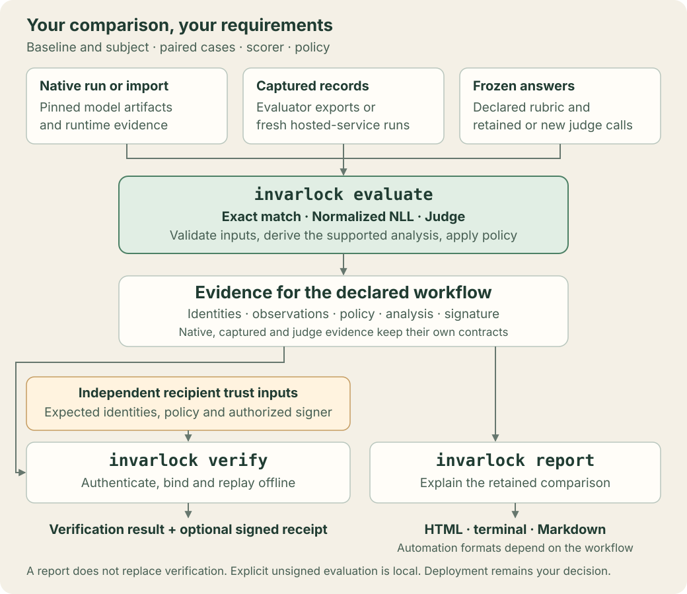

Architecture¶
InvarLock is an authenticated paired-evaluation engine. Its core path has three transactions:
Reference
Surface: Core transaction, package, data-flow, and trust boundaries
Stability: Architectural contract for the paired evaluation engine; implementation internals may change behind documented public surfaces
Use this page when: Locating responsibilities, selecting an integration boundary, or inspecting where evidence-signing and verifier authority separate
invarlock evaluate request.yaml
invarlock verify evidence/
invarlock report evidence/

evaluate executes, imports, or compares captured baseline-versus-subject
records and publishes evidence for the selected workflow. Native exact-match/NLL and
deterministic-extension execution/import retain pack v1, native
artifact/schedule/runtime anchors, and receipt v1/v2. Captured built-in and
recorded-score comparisons use pack v2, complete-run/request/policy/signer anchors,
trust profile v2, and receipt v3 scoped to captured_comparison.
The bounded judge workflow collects or imports frozen-answer measurements, validates their
complete planned schedule, and emits a judge evidence envelope with its own
recipient policy and verification receipt. It preserves fixed-benchmark judge
uncertainty separately from deterministic comparison statistics. All three use
the same CLI; the native and captured SDK facade is invarlock.engine. Native-only acceptance APIs reject
captured scope. report renders the stored result without changing the pack or
discovering an adjacent receipt; unsigned captured packs remain local reports.
Transaction boundaries¶
For native exact-match/NLL and deterministic-extension execution/import:
| Transaction | Reads | Writes | Independent trust required | Acceptance authority |
|---|---|---|---|---|
evaluate |
Closed request, referenced inputs, caller runtime resources or imported sidecars | One immutable evidence directory | Evidence-signing private key; authenticated runtime/material inputs | Creates paired measurements, a finite-schedule policy result, and signed evidence |
verify |
Untrusted evidence directory plus independent artifact/schedule/policy/runtime/signer anchors and the request anchor required for GGUF | One signed receipt outside the pack | Expected artifacts, schedule, policy, runtimes, evidence signer, GGUF request when applicable, verifier identity, and private key | Yes, for the exact bound comparison |
report |
Signature-authenticated evidence directory | Console, HTML, Markdown, or JUnit outside the pack | None beyond embedded evidence signature | Presents the canonical report; the verification receipt carries acceptance authority |
The same pack can be rendered many times and verified by many independent authorities without changing a byte in the evidence directory.
Captured exact-match/NLL comparisons score supplied case facts; other declared metrics can use explicitly attributed recorded scores. They do not authenticate native model execution. Evaluator profiles qualified as observation-only retain that limit. Signed captured verification replays the complete comparison under independent pins and a recipient-owned work budget. Captured judge requests instead collect or import bounded ratings and use the judge envelope and recipient policy. They preserve supplied-answer provenance; native judge evidence additionally retains the runtime capture. An unsigned pack is not independently authenticated, though an attempt to verify it can produce an external signed rejection. A valid receipt signature does not mean the technical verdict passes. The captured-results guide defines both paths.
Core layers¶
The native runtime layers are:
| Layer | Responsibility |
|---|---|
| Closed request | Select exactly two artifacts, one pinned dataset source or canonical schedule, one policy, exactly one built-in metric or scorer-extension binding, one execution mode, and one output directory |
| Runtime integration ABI | Identify artifacts and emit typed receipts and ordered scoring observations |
| Paired transaction | Prepare or authenticate the schedule, cross-bind both sides, derive built-in scores or replay an authorized scorer, replay the paired interval, and qualify optional count/width and exact-match side-accuracy controls |
| Canonical bundle | Bind normalized intent, identities, provider material, paired records, report, checksums, and evidence signature |
| Independent verifier | Recompute integrity, identities, pairs, scores, report, and policy verdict under caller-owned trust anchors |
| Report renderer | Produce console, HTML, Markdown, and JUnit views from the authenticated canonical report |
Trust boundaries¶
The following native pack-v1 anchors are not substitutes for captured run/request pins or the judge recipient policy.
The evidence-signing key authenticates the bundle bytes and identifies the signer. It does not make the submitted assertions true. Verification therefore requires inputs that are not selected by the bundle:
- the exact policy file;
- the expected baseline and subject artifact-identity digests;
- the expected canonical schedule digest;
- expected baseline and subject runtime image digests;
- the expected evidence-signer fingerprint; and
- for GGUF evidence, the expected normalized-request digest.
The verifier signs those anchors, the pack-manifest digest, and its verdict with a verifier-controlled key. The recipient's process enforces any required separation of signing keys. Keeping the receipt outside the bundle lets multiple authorities assess the same immutable evidence using independently sourced copies of the policy bytes bound into that bundle.
| Claim | Evidence source | Independent verification action |
|---|---|---|
| Which artifacts were compared | Typed artifact identities and request bindings | Re-derive identity and compare material digests |
| Which inputs were scored | Canonical schedule and ordered observation records | Recompute schedule digest, IDs, order, and input digests |
| Which runtime each side declares | Runtime manifests and provider receipts | Compare both image digests to caller-owned expected values; this does not attest execution |
| What each backend returned | Scoring observations | Validate per-record facts and observation digests |
| What score and threshold apply | Paired records, policy, scorer binding when selected, and canonical report | Re-derive scores, means, comparison, paired interval, threshold, optional count/width and exact-match side-accuracy qualification, and verdict; require independently authorized scorer code when selected |
| Who signed the pack | Manifest signature | Compare the public-key fingerprint to the caller anchor |
| Who accepted or rejected it | External receipt | Verify receipt signature, identity, fingerprint, anchors, and manifest digest |
Runtime execution has a second boundary. Each strict executed side runs in its own worker with an independently pinned image, selected device, and entrypoint profile. The worker has a read-only job, schedule, artifact, and closed support resources plus one isolated writable output directory. It never receives the other artifact or either signing key. An observed container boundary, digest-bearing image identity, offline execution, disabled remote code, and disabled third-party plugins are required for each side. These bindings describe the observed execution envelope; an image digest alone is not proof of every property of the host or accelerator.
Package boundaries¶
The invarlock distribution contains:
- the evaluate, verify, and report transactions;
- the request and evidence contracts;
- the runtime-provider ABI;
- the Hugging Face Transformers provider; and
- the independent verifier and report renderer.
The GGUF, TensorRT-LLM, and Hugging Face vision-text providers ship in the core
distribution. They implement the same ABI and register through the
invarlock.runtime_providers entry-point group. Numeric diagnostics also live
in core; their optional NumPy dependency is exposed through
invarlock[diagnostics], and diagnostics have no acceptance authority.
The core invarlock.judge_measurements module adapts bounded collection logs to
judge measurements. The invarlock[judge] extra supplies its pinned provider SDKs.
Offline import, schedule replay, analysis, signing,
independent verification, and reporting live in core and do not import or require
Inspect or OpenAI SDKs. evaluate invokes the core collector when a judge
request requires new ratings, under its explicit budgets. Preflight, retained-call
import, verification and reporting make no provider calls.
invarlock
├── request + evidence contracts
├── evaluate / verify / report transactions
├── all maintained runtime providers + provider ABI
├── bounded judge collection
├── observation-only diagnostics
└── canonical verifier + renderer
public dependency extras
├── hf
├── diagnostics
├── vision-text
└── judge
See Runtime providers for the extension contract.
Native data flow¶
- The request loader resolves all file references beneath the request root, without following symbolic links, and authenticates the exact source bytes.
- In run mode, pinned local JSONL is transformed deterministically into the canonical schedule. The host CLI launches one independently digest-bound Docker or Podman worker per side. Both workers score the same schedule, and the host validates their complete side results. Import mode authenticates a supplied canonical schedule and complete runtime sidecars.
- The engine selects exact match, normalized NLL, native judge, or an explicitly authorized deterministic text scorer. Exact match replays paired outcome counts, the exact McNemar probability and Newcombe 95% interval. Normalized NLL and scorer-extension deltas use the fixed 2,048-replicate schedule interval. Native judge freezes the exact native capture, derives answer-dependent plan bindings, collects bounded ratings through the installed optional integration, and applies its fixed-benchmark analysis. Each scorer preserves its own statistical assumptions and conservative policy bound.
- Publication stages a closed inventory, signs its manifest or judge envelope, and renames the directory into place without replacing an existing destination.
- Verification treats the submitted bundle as untrusted and replays the selected contract under independent trust inputs. Native pack-v1 verification writes a signed receipt outside the bundle; judge verification returns a local result and signs a separate receipt when requested.
- Reporting checks retained evidence and writes optional presentation outputs. Native and captured directory-pack reports display the recorded comparison; judge reports additionally replay retained measurements. It reports authentication and policy state separately from recipient acceptance.
Run mode and import mode differ only before bundle assembly. Run mode asks each isolated worker to emit the sidecars. Import mode authenticates supplied sidecars and re-derives their identities and pairs. Both reach the same canonical pack and independent verifier. CPU workers and workers assigned to distinct explicit CUDA indexes may run in parallel. Generic CUDA, a shared CUDA index, and CPU/CUDA pairs run sequentially. In every case, the authenticated schedule and record IDs establish the pairing invariant.
The exact inventory is documented in Evidence artifacts; the decision and receipt shapes are documented in Reports and receipts.
The judge measurement reference defines the separate frozen-answer collection and replay flow, missing-measurement handling, fixed benchmark statistical scope, and recipient-owned plan, result, and signer pins. A report does not authorize acceptance or establish judge accuracy.
Stable and internal surfaces¶
Embedding applications should use invarlock.engine. Provider implementations
use the runtime-provider ABI in invarlock.core.runtime_provider. An embedding
that selects a scorer extension supplies an explicitly authorized
ScorerExtensionRegistry to evaluation and verification. Other modules
that encode, decode, or verify individual internal files are implementation
details unless a page explicitly calls them public.
The schemas under contracts/ are public inspection and interchange contracts.
The Python implementation remains authoritative for semantic cross-file replay,
safe filesystem traversal, and transaction behavior that cannot be expressed by
JSON Schema alone.
Related documentation¶
- Evaluation lifecycle follows the transaction boundaries from request loading through publication, verification, and rendering.
- Evidence artifacts inventories the canonical bundle and its dependency chain.
- Public contracts defines the stable interchange formats.
- Runtime providers describes the ABI boundary around backend-specific execution.